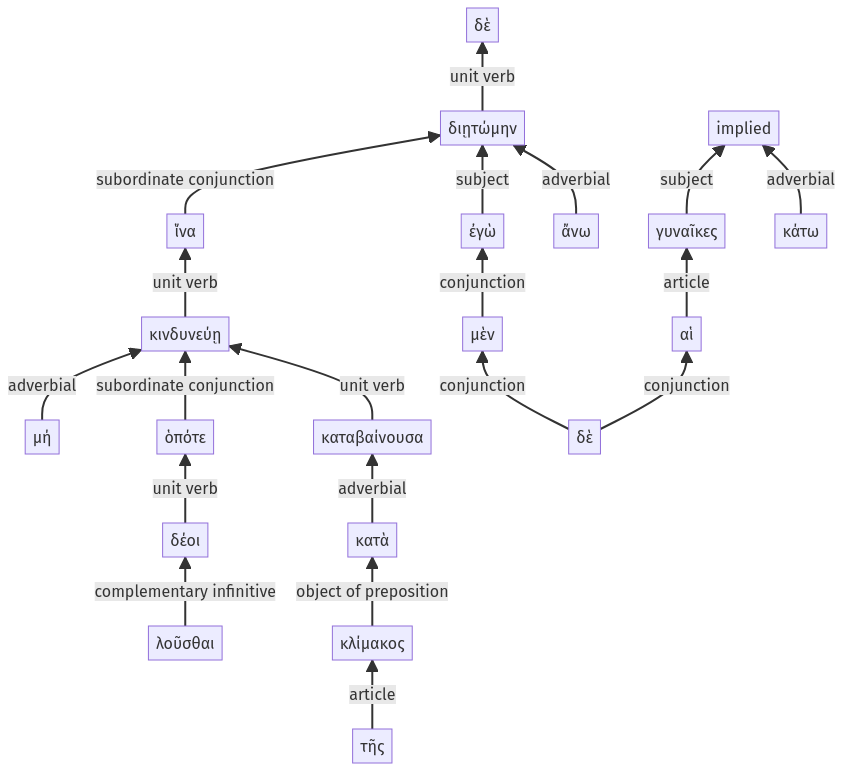

Lysias, Oration 1, 1.9.39-1.9.57a
1.9.29-1.9.38a | 1.10.1-1.10.23a
Sentence 19
1.9.39-1.9.57a
ἵνα δὲ μή, ὁπότε λοῦσθαι δέοι, κινδυνεύῃ κατὰ τῆς κλίμακος καταβαίνουσα, ἐγὼ μὲν ἄνω διῃτώμην, αἱ δὲ γυναῖκες κάτω.
2 ἵνα μή
3 ὁπότε λοῦσθαι δέοι
2 κινδυνεύῃ
3 κατὰ τῆς κλίμακος καταβαίνουσα
1 ἐγὼ μὲν ἄνω διῃτώμην
1 αἱ δὲ γυναῖκες κάτω
ἵνα δὲ μή, ὁπότε λοῦσθαι δέοι, κινδυνεύῃ κατὰ τῆς κλίμακος καταβαίνουσα, ἐγὼ μὲν ἄνω διῃτώμην, αἱ δὲ γυναῖκες κάτω.
Highlighting:
- connecting words
- unit verb
- subject
- object
Color code:
- independent clause (level 1, intransitive verb)
- independent clause (level 1, intransitive verb)
- subordinate clause (level 2, intransitive verb)
- subordinate clause (level 3, intransitive verb)
- circumstantial participle (level 3, intransitive verb)
